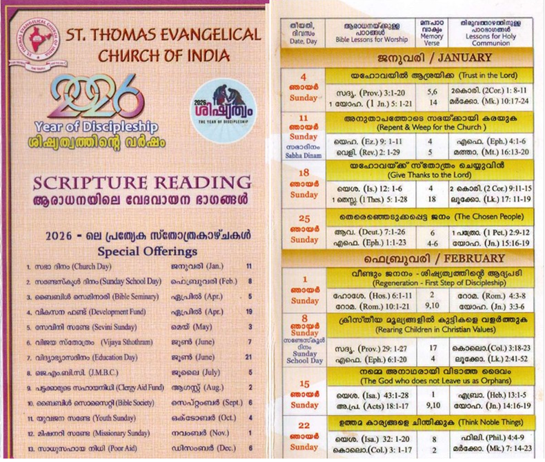
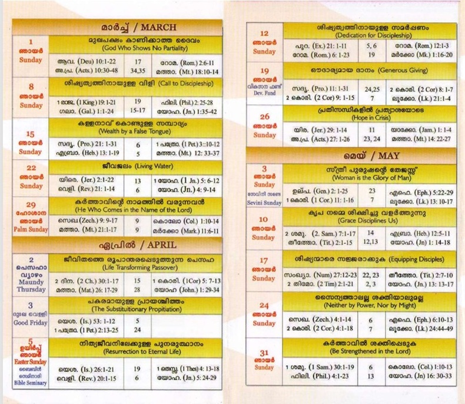
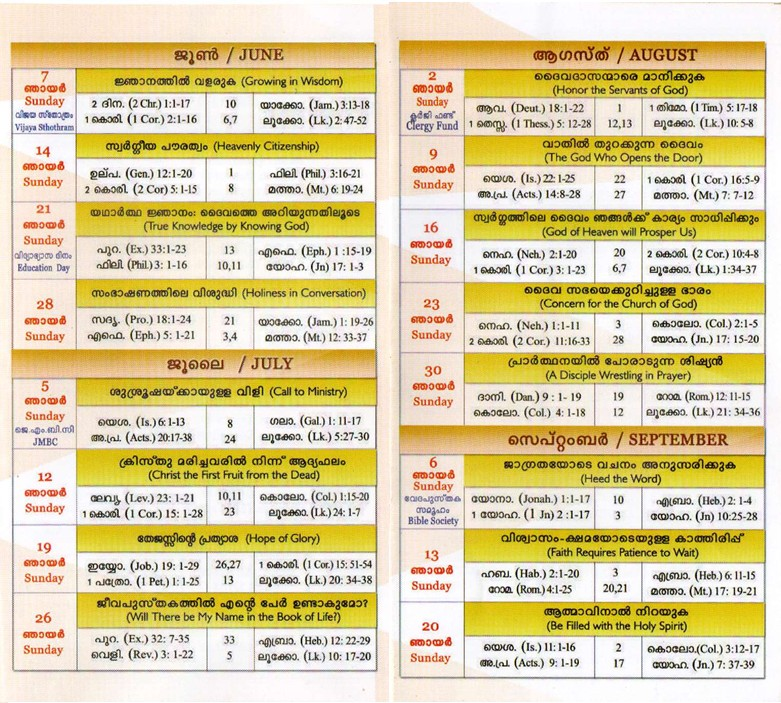
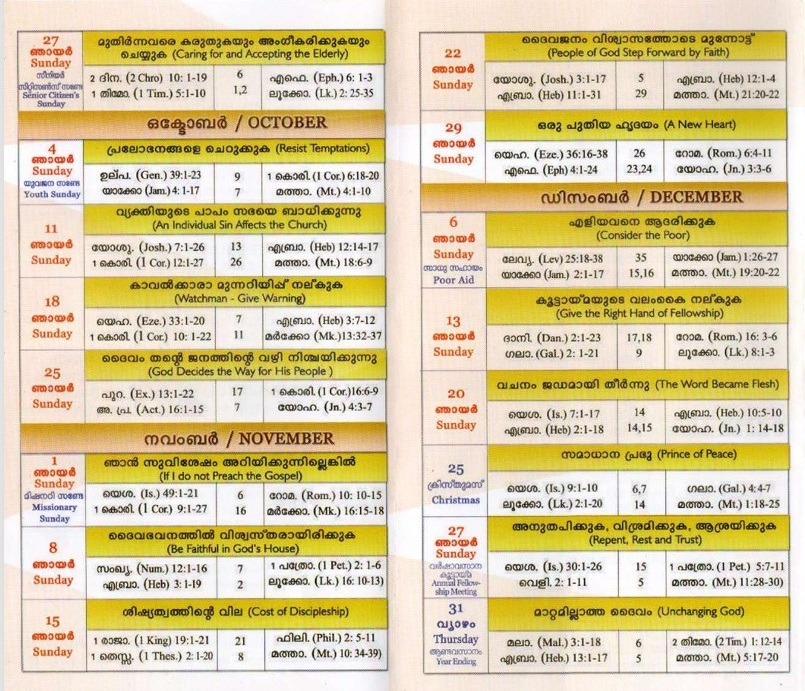
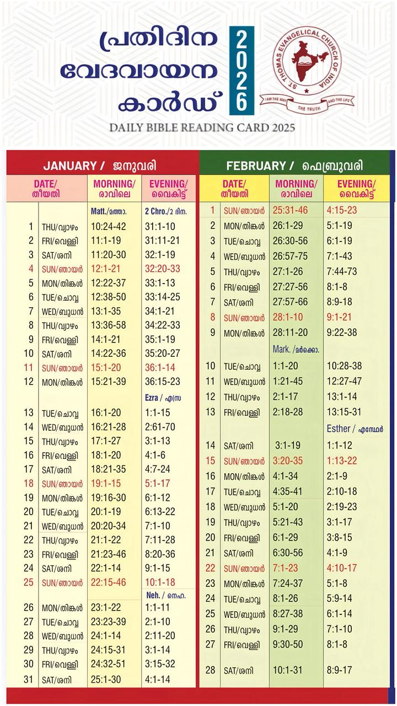

Sunday Worship Scripture Reading Card |

Sunday Worship Scripture Reading Card |
The cards below list the Old Testament, New Testament, Epistle, and Gospel readings for each Sunday service, following the church's Lectionary cycle.




Daily Reading Card - Jan and Feb 2026 |
